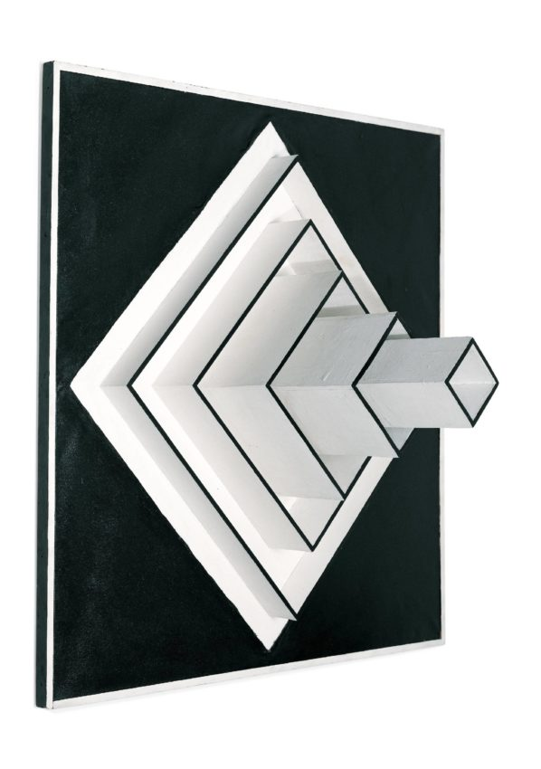

Sol LeWitt
Solomon "Sol" LeWitt was an American artist linked to various movements, including Conceptual art and Minimalism.
Collected Essays of Art History and Criticism
Hans Hartung was a German-French painter, known for his gestural abstract style. He was also a decorated World War II veteran of the French Foreign Legion.
Georgia Totto O'Keeffe was an American artist. She was known for her paintings of enlarged flowers, New York skyscrapers, and New Mexico landscapes. O'Keeffe has been recognized as the "Mother of American modernism".
Cynthia Morris Sherman is a Pictures Generation American artist whose work consists primarily of photographic self-portraits, depicting herself in many different contexts and as various imagined characters.
Solomon "Sol" LeWitt was an American artist linked to various movements, including Conceptual art and Minimalism.
Jean-Michel Basquiat was an American artist of Haitian and Puerto Rican descent. Basquiat first achieved fame as part of SAMO, an informal graffiti duo who wrote enigmatic epigrams in the cultural hotbed ...
Katsushika Hokusai, known simply as Hokusai, was a Japanese artist, ukiyo-e painter and printmaker of the Edo period. Born in Edo, Hokusai is best known as author of the woodblock print series Thirty-six Views of Mount Fuji which includes the internationally iconic print, The Great Wave off Kanagawa.